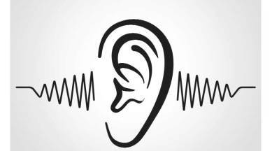
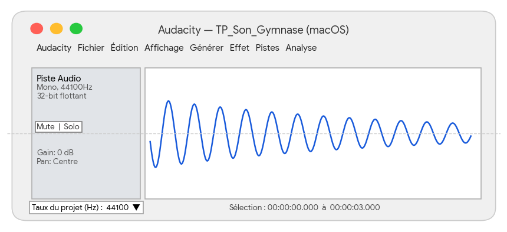
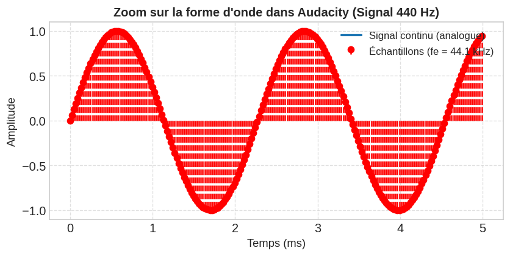
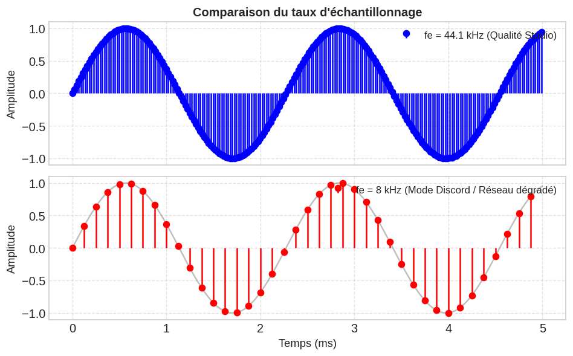
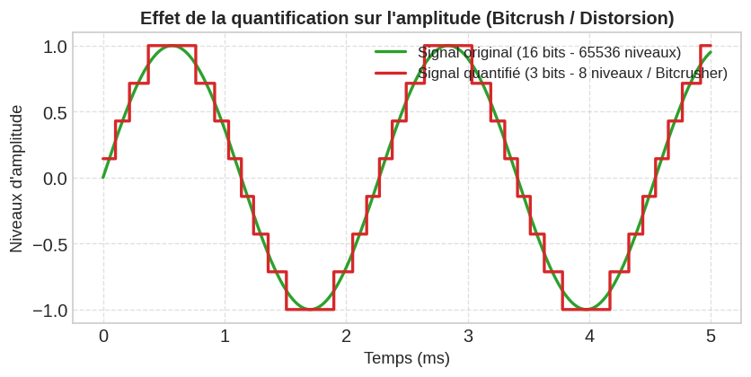

TP1-REDO-02 : Le son#
Introduction & Objectifs#
Un son physique est une onde mécanique continue (analogique). Pour qu’un ordinateur, un smartphone ou une plateforme de streaming (Spotify, TikTok, Discord) puisse traiter, stocker ou transmettre ce son, il doit le numériser (le convertir en une suite de \(0\) et de \(1\)).
À la fin de ce TP, vous saurez :
Définir et expérimenter l’échantillonnage (fréquence \(f_e\)) et comprendre le Théorème de Shannon-Nyquist.
Observer l’effet du repliement de spectre (Aliasing).
Définir et expérimenter la quantification (résolution en bits) et le bruit de quantification.
Calculer le débit binaire (\(kbit/s\)) et l’impact sur votre forfait data 4G/5G.
Partie 1 : Prise en main d’Audacity sur Mac & Signal Continu (15 min)#
1.1 Repérage dans l’interface macOS#
Ouvrez le logiciel Audacity depuis le Finder ou Spotlight (Cmd + Espace).

Menu supérieur :
Générer,Effet,Pistes.Panneau de contrôle de la piste (à gauche) : Indique la fréquence de la piste (ex: \(44\ 100\text{ Hz}\)) et le format (32 bits flottant).
Menu du bas : Taux du projet (Hz) — détermine la fréquence globale d’exportation.
Génération d’un son pur#
Allez dans le menu : Générer > Signal…
Réglez les paramètres suivants :
Forme d’onde :
SinusoïdeFréquence (Hz) :
440(Note La3 du diapason)Amplitude :
0.8Durée :
00:00:03.000(3 secondes)
Cliquez sur Valider.
Observation des échantillons (Zoom)#
Sélectionnez l’outil de zoom ou utilisez le raccourci
Cmd + 1(Zoom avant) plusieurs fois sur le début du signal.Zoomez jusqu’à voir les points individuels sur la courbe sinusoïdale.

Question 1 :
Rappelez la définition d’un échantillon audio. Que représente l’intervalle de temps \(T_e\) entre deux points consécutifs ?
Réponse :
Partie 2 : L’Échantillonnage & Théorème de Shannon-Nyquist (30 min)#
L’échantillonnage consiste à mesurer l’amplitude du son à intervalles réguliers \(f_e\) fois par seconde.
Expérimentation de la dégradation de fréquence#
Sélectionnez votre piste audio.
Dupliquez-la :
Cmd + D(Piste 2).Sur la Piste 2, allez dans : Pistes > Rééchantillonner…
Changez la fréquence pour
8 000 Hzpuis cliquez sur OK.Désactivez le son de la Piste 1 (bouton
Mute) et écoutez la Piste 2.

Question 2 :
Comparez visuellement et à l’oreille le signal à \(44.1\text{ kHz}\) (qualité standard) et le signal à \(8\text{ kHz}\) (qualité note vocale dégradée / mauvaise connexion Discord).
Réponse :
Expérience sur le Repliement de Spectre (Aliasing)#
Créez une nouvelle piste : Générer > Signal…
Fréquence :
3 000 Hz(Un son aigu)Durée :
3 secondes
Appliquez un rééchantillonnage (Pistes > Rééchantillonner…) à
4 000 Hz.Écoutez le son obtenu.
Question 3 :
La fréquence perçue est-elle plus aiguë ou plus grave que le son original de \(3\ 000\text{ Hz}\) ? Pourquoi ?
(Aide : Cherchez la formule du Théorème de Shannon-Nyquist)
Réponse :
À RETENIR — Théorème de Shannon-Nyquist :
Pour pouvoir numériser un son sans créer de fréquences “fantômes” (aliasing), la fréquence d’échantillonnage \(f_e\) doit être au moins égale au double de la fréquence maximale \(f_{\text{max}}\) contenue dans le signal :
\(f_e \ge 2 \times f_{\text{max}}\) L’oreille humaine entendant jusqu’à \(20\ 000\text{ Hz}\), il faut une fréquence d’au moins \(40\ 000\text{ Hz}\) (d’où le standard à \(44.1\text{ kHz}\) ou \(48\text{ kHz}\)).
Partie 3 : La Quantification (15 min)#
Si l’échantillonnage découpe le temps (axe horizontal), la quantification découpe l’amplitude (axe vertical). Elle définit la précision de la mesure en nombre de bits (\(b\)).

Expérimentation “Bitcrush” / Style Retrogaming#
Importez un extrait musical de votre choix ou enregistrez votre voix au micro (Pistes > Ajouter nouvelle > Piste mono).
Sélectionnez la piste.
Allez dans : Effet > Distorsion…
Sélectionnez l’effet Bitcrusher (ou réduction de résolution) et testez les résolutions : 8 bits, 4 bits, puis 2 bits.
Question 4 :
Complétez le tableau suivant :
Nombre de bits (\(b\)) |
Niveaux d’amplitude possibles (\(2^b\)) |
Qualité / Rendu sonore |
|---|---|---|
16 bits |
\(2^{16} = 65\ 536\) |
Qualité Standard (Excellente) |
8 bits |
\(2^8 = \dots\dots\) |
Style console rétro / Game Boy |
4 bits |
\(2^4 = \dots\dots\) |
Bruit fort / Voix robotique |
2 bits |
\(2^2 = \dots\dots\) |
Son très déformé / Incompréhensible |
Partie 4 : Application Concrète — Consommation de votre Forfait Data (30 min)#
Formules mathématiques#
Débit binaire (\(D\)) : Nombre de bits transmis par seconde (\(\text{bit/s}\)). \(D = f_e \times b \times c\)
\(f_e\) : Fréquence d’échantillonnage (\(\text{Hz}\))
\(b\) : Profondeur de quantification (\(\text{bits}\))
\(c\) : Nombre de canaux (\(1 = \text{Mono}\), \(2 = \text{Stéréo}\))
Taille d’un fichier audio non compressé (\(T\)) : \(\text{Taille (en Octets)} = \frac{D \times \text{Durée (en secondes)}}{8}\) (Rappel : \(1\text{ Octet} = 8\text{ bits}\), \(1\text{ Mo} = 10^6\text{ Octets}\), \(1\text{ Go} = 10^9\text{ Octets}\))
Exercice 1 : Streaming “Lossless” sur Apple Music / Tidal#
Un utilisateur active l’option Hi-Res Lossless sur son application de musique :
Fréquence d’échantillonnage : \(f_e = 96\ 000\text{ Hz}\)
Profondeur de quantification : \(b = 24\text{ bits}\)
Format : Stéréo (\(c = 2\))
Calculez le débit binaire brut \(D\) en \(\text{kbit/s}\) puis en \(\text{Mbit/s}\).
Calcul :Si vous écoutez 1 heure de musique par jour avec ce réglage sur votre réseau 4G/5G, quelle quantité de données (en \(\text{Go}\)) consommez-vous en 30 jours ?
Calcul :
Exercice 2 : Note Vocale WhatsApp / Discord#
Lors d’un appel réseau instable, Discord passe en qualité minimale :
\(f_e = 16\ 000\text{ Hz}\), \(b = 8\text{ bits}\), Mono (\(c = 1\)).
Calculez le débit binaire \(D\) en \(\text{kbit/s}\).
Calcul :Combien de fois cette note vocale est-elle moins lourde que le flux Hi-Res de l’Exercice 1 ?
Calcul :
Exercice 3 : Vérification expérimentale dans Audacity#
Dans Audacity, exportez votre enregistrement de 3 secondes : Fichier > Exporter l’audio…
Choisissez le format WAV (PCM 16 bits).
Ouvrez le Finder macOS, faites un clic droit sur le fichier exporté \(\rightarrow\) Obtenir des informations (
Cmd + I).Comparez la taille affichée par macOS avec votre calcul théorique.
Bilan & Synthèse#
Question de réflexion finale :
En réalité, une chanson de 3 minutes sur Spotify en qualité standard ne pèse pas \(30\text{ Mo}\) mais environ \(3\text{ à }5\text{ Mo}\). Quel procédé informatique est utilisé par les plateformes pour réduire la taille des fichiers sans trop altérer la qualité ?
Réponse :